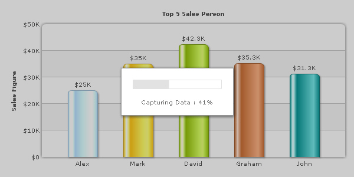
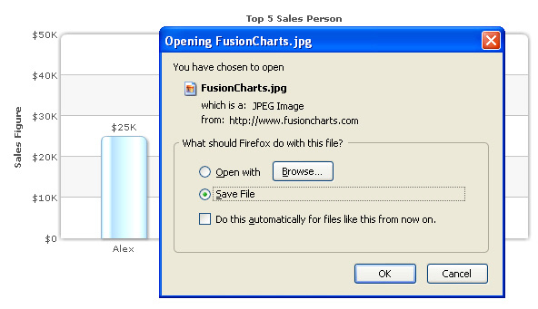
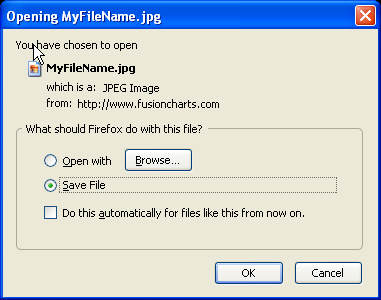

| Returning the exported output as download |
When returning the exported output (image/PDF) as download to browser, the entire process flow looks as under:
To aid your understanding of this section, we will recommend you to go through the Overview page of Exporting Charts as PDF or Images > Server-side export Let us quickly see how to configure the entire setup. |
| Setting up the server-side export handlers |
First, you need to copy-paste the required Server-side Export Handler files from Download Package>ExportHandlers folder to your server. For this example, we have copied the PHP files to http://www.domain.com/FusionCharts/ExportHandlers/PHP/index.php. Make sure you have copied all the files from the respective folder. This completes the server side setup for download routine of export. Next, we will configure the XML for export parameters. Our export handlers in few languages depend on some other libraries, for example, the PHP handler needs GD and GZip installed on your server. Similarly, Ruby on Rails needs RMagick and zlib to be present on your server. Make sure that you have these dependencies installed properly. |
| Adding export parameters to XML |
Now, you need to set the chart to allow export. This is done using: <chart exportEnabled='1' ...> If exportEnabled is set to 0, the chart cannot initiate export process, irrespective of the trigger. Next, you need to set the Export Handler, which is the path to Server-side Export Handler. For our example, we have set the path as http://www.domain.com/FusionCharts/ExportHandlers/PHP/index.php - so the XML now looks like: <chart exportEnabled='1' exportHandler='http://www.domain.com/FusionCharts/ExportHandlers/PHP/index.php' ...> Now, since we intend to use Server-side export, we set <chart ... exportAtClient='0' ...> Finally, using Server-side Export Handler, we intend to have the export file download to user's machine. So, we set: <chart exportAction='download' ...> The final XML for this example looks as under: |
<chart yAxisName='Sales Figure' caption='Top 5 Sales Person' numberPrefix='$' useRoundEdges='1' bgColor='FFFFFF,FFFFFF' showBorder='0' exportEnabled='1'
exportHandler='http://www.domain.com/FusionCharts/ExportHandlers/PHP/index.php' exportAtClient='0' exportAction='download' >
<set label='Alex' value='25000' />
<set label='Mark' value='35000' />
<set label='David' value='42300' />
<set label='Graham' value='35300' />
<set label='John' value='31300' />
</chart> |
| See it live! |
When you now run your chart and select "Save as JPEG image" from context menu, the chart will first start the capture process as shown below: |
|  |
After capturing, the chart sends its data to Export Handler (PHP in this case), which in turn processes it and returns an output image for download as shown below: |
|  |
Note that in the above image the dialog says from: http://www.fusioncharts.com. When the PHP files are hosted on your server, this will reflect your domain name. |
| Setting target window for download |
As you can see above, by default, the export chart returned the image in the same browser window. However, if you want to specify a new browser window for the exported image, you can set: <chart ... exportTargetWindow='_blank' ...> This will open the output image in a new browser window. |
| Configuring file name of exported file |
Additionally, the return file name, by default is named as FusionCharts (.jpg/,png/.pdf). You can change this by setting: <chart ... exportFileName='MyFileName' ...> Note that you do not have to provide the extension here, as the extension depends on the format that was selected on chart during export. This will result in: |
|  |
That was all about Server-side download routine. Next we will see how to have these images saved on server disk, rather than download them. |